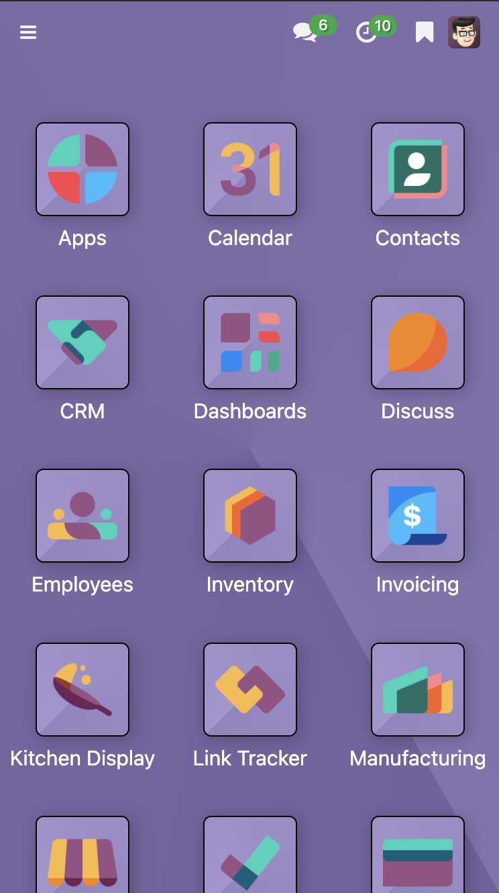
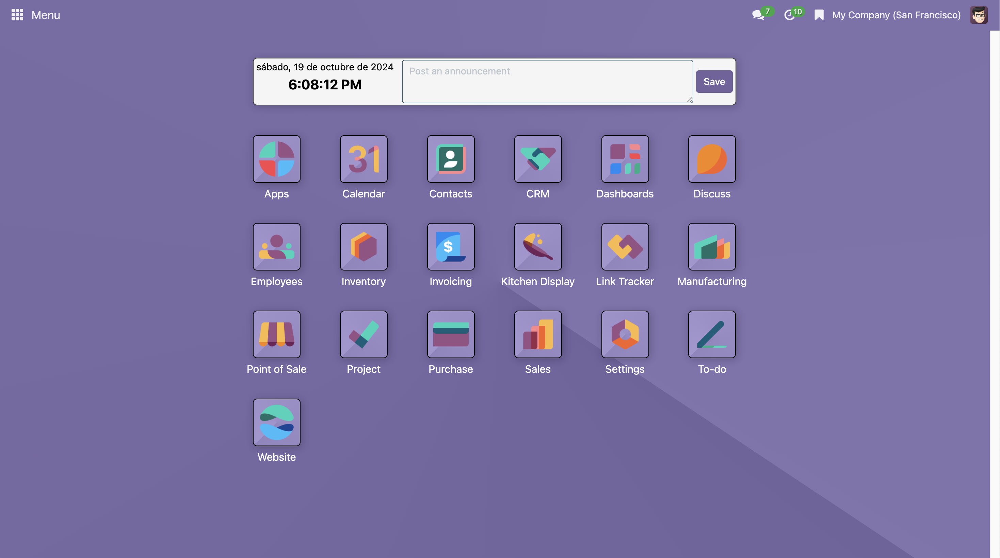
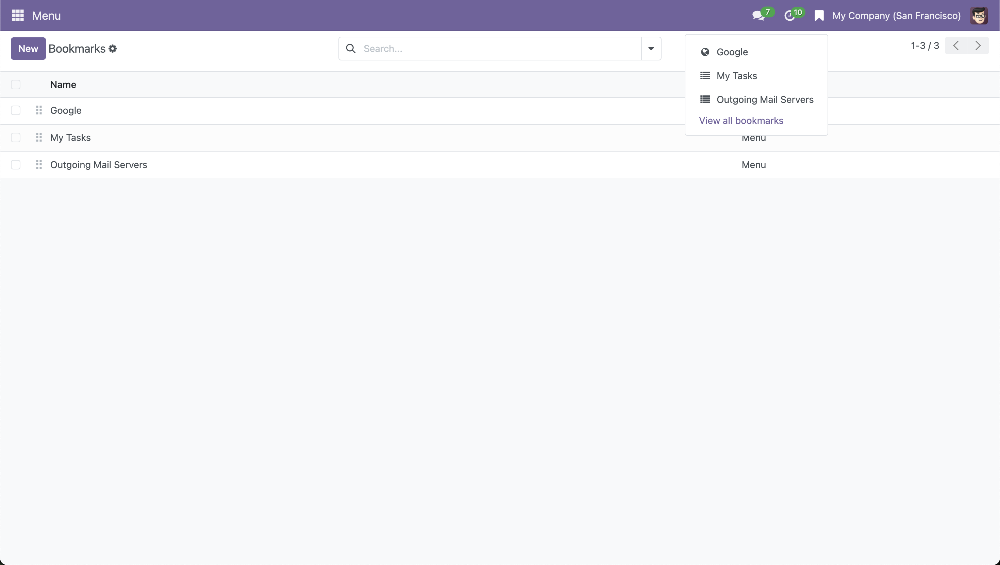
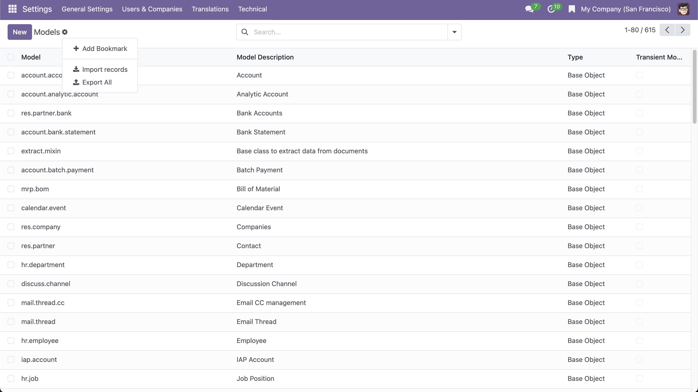

Main Menu
Version 19.0.1.2.0
This module is designed for Odoo Community Edition, providing an enhanced way to navigate between modules more efficiently.
If you have website installed, it is recommended to also download the
main_menu_website module for a better user experience.
Features:
-
Centralized main menu to quickly access the core modules installed in Odoo.

-
Enables widget functionality to display the current date and publish announcements for all users. Only administrators can modify announcements.

-
Allows the creation of bookmarks for quick access to important menus within Odoo or external links.

-
Easily create new menu bookmarks using the "Add Bookmark" button.
